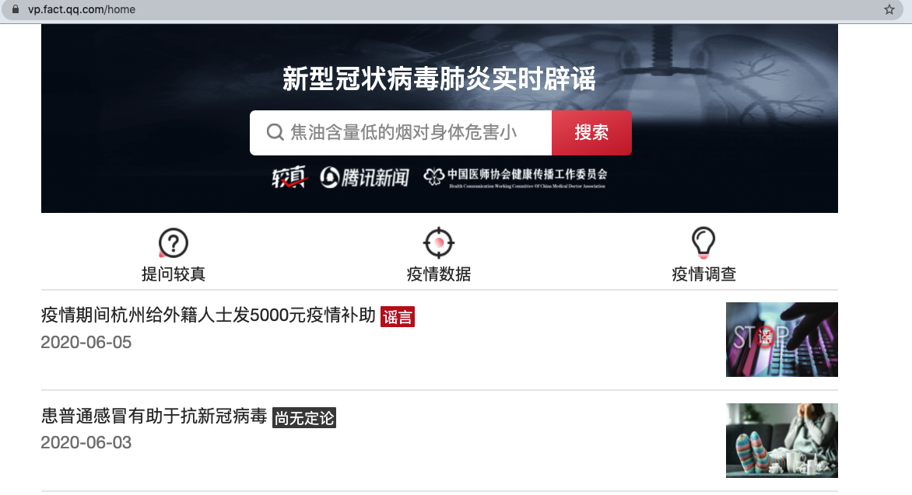
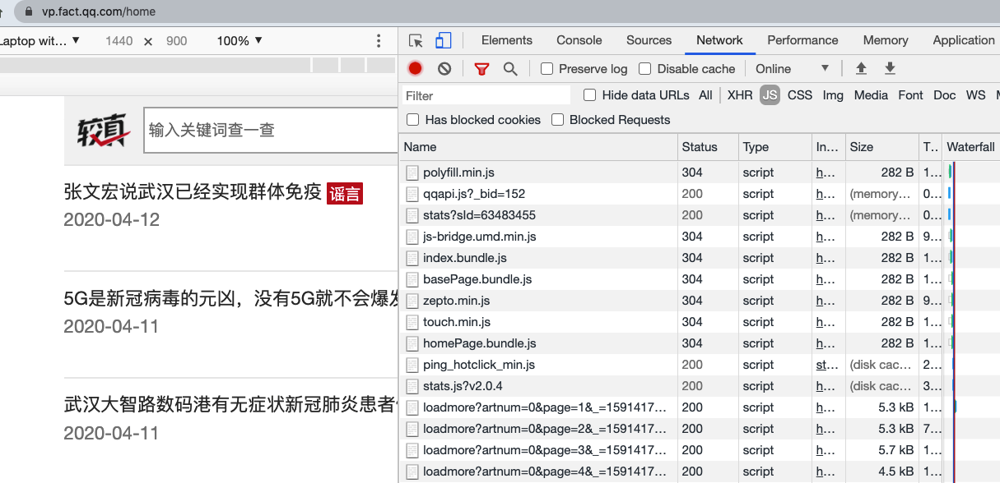

抓取实时辟谣数据¶
https://vp.fact.qq.com/home

https://vp.fact.qq.com/article?id=be3aea585b07c193778985e180cf164b
https://vp.fact.qq.com/loadmore?artnum=0&page=0

https://vp.fact.qq.com/loadmore?artnum=0&page=0

import requests
from bs4 import BeautifulSoup
path = 'https://vp.fact.qq.com/loadmore?artnum=0&page='
url = path + '0'
content = requests.get(url)
d = content.json()
d['content'][0]
{'title': '疫情期间杭州给外籍人士发5000元疫情补助',
'author': '解放日报•上观新闻运营的辟谣新闻和辟谣服务网络平台',
'authordesc': '解放日报•上观新闻运营的辟谣新闻和辟谣服务网络平台',
'id': 'be3aea585b07c193778985e180cf164b',
'date': '2020-06-05',
'markstyle': 'fake',
'result': '假',
'explain': '谣言',
'abstract': '网传一越南女子在接受媒体采访时称，疫情期间杭州给外籍人士发5000元疫情补助，经记者查证该说法不实。该女子发微博解释这是个误会，是电视台配音员将500念错成了5000，而这500元是杭州企业员工租房补贴。杭州市委、市人民政府于2020年2月20日曾发布相关政策，对当地按规定缴纳社会保险费、2019年全年工资收入低于7.2万元、未承租公租房和未享受政府住房补贴且在外租住房屋的企业员工，政府给予每人500元租房补贴。',
'tag': ['新冠疫情', '杭州'],
'type': 1,
'videourl': '',
'cover': '//jiaozhen-70111.pictestsz.qpic.cn/qs4rraKq4GPvUCekBedwUX?imageView2/2/w/150/h/90',
'coverrect': '//jiaozhen-70111.pictestsz.qpic.cn/qs4rraKq4GPvUCekBedwUX',
'coversqual': '//jiaozhen-70111.pictestsz.qpic.cn/qs4rraKq4GPvUCekBedwUX?imageView2/2/w/300/h/300',
'section': '',
'iscolled': False,
'arttype': 'normal'}
print(*range(61))
0 1 2 3 4 5 6 7 8 9 10 11 12 13 14 15 16 17 18 19 20 21 22 23 24 25 26 27 28 29 30 31 32 33 34 35 36 37 38 39 40 41 42 43 44 45 46 47 48 49 50 51 52 53 54 55 56 57 58 59 60
import random
random.random()
0.5783708392532593
from time import sleep
import random
jsons = []
for i in range(61):
print(i)
sleep(random.random())
path = 'https://vp.fact.qq.com/loadmore?artnum=0&page='
url = path + str(i)
content = requests.get(url)
d = content.json()
for j in d['content']:
jsons.append(j)
0
1
2
3
4
5
6
7
8
9
10
11
12
13
14
15
16
17
18
19
20
21
22
23
24
25
26
27
28
29
30
31
32
33
34
35
36
37
38
39
40
41
42
43
44
45
46
47
48
49
50
51
52
53
54
55
56
57
58
59
60
len(jsons)
609
import pandas as pd
df = pd.DataFrame(jsons)
df.head()
| title | author | authordesc | id | date | markstyle | result | explain | abstract | tag | type | videourl | cover | coverrect | coversqual | section | iscolled | arttype | |
|---|---|---|---|---|---|---|---|---|---|---|---|---|---|---|---|---|---|---|
| 0 | 疫情期间杭州给外籍人士发5000元疫情补助 | 解放日报•上观新闻运营的辟谣新闻和辟谣服务网络平台 | 解放日报•上观新闻运营的辟谣新闻和辟谣服务网络平台 | be3aea585b07c193778985e180cf164b | 2020-06-05 | fake | 假 | 谣言 | 网传一越南女子在接受媒体采访时称，疫情期间杭州给外籍人士发5000元疫情补助，经记者查证该说... | [新冠疫情, 杭州] | 1 | //jiaozhen-70111.pictestsz.qpic.cn/qs4rraKq4GP... | //jiaozhen-70111.pictestsz.qpic.cn/qs4rraKq4GP... | //jiaozhen-70111.pictestsz.qpic.cn/qs4rraKq4GP... | False | normal | ||
| 1 | 患普通感冒有助于抗新冠病毒 | 医学博士 | 医学博士 | 4ff0cdf7eb98873c62b4565bdbce3a22 | 2020-06-03 | doubt | 疑 | 尚无定论 | 最近发表于“CELL”杂志的一项研究显示，研究人员在从未接触过新冠病毒的人群体内检测到了抗新... | [新冠病毒, 感冒] | 1 | //jiaozhen-70111.pictestsz.qpic.cn/q7xbT2KVtHY... | //jiaozhen-70111.pictestsz.qpic.cn/q7xbT2KVtHY... | //jiaozhen-70111.pictestsz.qpic.cn/q7xbT2KVtHY... | False | normal | ||
| 2 | 新冠抗体重大突破，100%抑制病毒，4天内清除 | 医学博士 | 医学博士 | f46f04bf6af9bc19272fc6b4b796573a | 2020-05-22 | fake | 假 | 谣言 | 这个结论目前只是基于实验室细胞实验得出的，要证明该抗体是否真的对人体有效，还有待进一步的动物... | [新冠病毒, 抗体] | 1 | //jiaozhen-70111.picnjc.qpic.cn/rtHMVkC4NGwa8j... | //jiaozhen-70111.picnjc.qpic.cn/rtHMVkC4NGwa8j... | //jiaozhen-70111.picnjc.qpic.cn/rtHMVkC4NGwa8j... | False | normal | ||
| 3 | 荷兰以色列已开发出能使新冠病毒失效阻断感染的抗体 | 宾夕法尼亚大学医学院病理及实验医药系研究副教授 | 宾夕法尼亚大学医学院病理及实验医药系研究副教授 | 5ef622d7cb575f318234416513c50437 | 2020-05-15 | fake | 假 | 谣言 | 这篇报道极具误导性。荷兰以色列两国确实正在开发抗体，但目前只是进行了体外实验，还没有证据显示... | [新型冠状病毒, 抗体] | 1 | //jiaozhen-70111.picnjc.qpic.cn/xu7GyborFf2UCf... | //jiaozhen-70111.picnjc.qpic.cn/xu7GyborFf2UCf... | //jiaozhen-70111.picnjc.qpic.cn/xu7GyborFf2UCf... | False | normal | ||
| 4 | 黑龙江省规定疫情期间乘电梯要背对背 | 黑龙江日报 | 黑龙江省第一政经大报 | 0cb1834d749e68e1f61edbb25a88b79b | 2020-05-14 | fake | 假 | 谣言 | 网传的“乘客进入电梯后要背对背站立”系误读，黑龙江省电梯行业协会制定并发布的《新型冠状病毒疫... | [黑龙江, 电梯] | 1 | //jiaozhen-70111.picnjc.qpic.cn/mug3jVjJsoCmg3... | //jiaozhen-70111.picnjc.qpic.cn/mug3jVjJsoCmg3... | //jiaozhen-70111.picnjc.qpic.cn/mug3jVjJsoCmg3... | False | normal |
df.to_excel('../data/vpqq2020-06-06.xlsx')